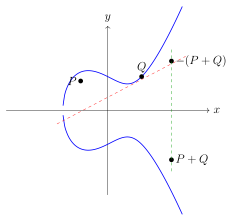
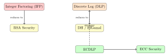

Chapter 1: Mathematical Foundations of Cryptography¶
Cryptography rests on carefully chosen mathematical problems that are easy to compute in one direction but infeasible to reverse. This chapter builds the mathematical toolkit required for the rest of the book: modular arithmetic, group theory, hardness assumptions, elliptic curves, and the information-theoretic concepts that underpin security definitions.
1.1 Modular Arithmetic¶
Definition 1.1 (Modular Congruence)
We write \(a \equiv b \pmod{n}\) if \(n \mid (a - b)\), i.e., \(n\) divides \(a - b\). The set of integers modulo \(n\) is denoted \(\mathbb{Z}_n = \{0, 1, …, n-1\}\).
Think of \(\mathbb{Z}_n\) as arithmetic on a clock face: once you hit \(n\), you wrap around to zero. This wrapping is what makes reversal hard. Adding two numbers modulo \(n\) is trivial, but given only the result, you can’t tell whether the inputs were 3 and 5, or 8 and \(n\) (since \(8 \equiv 8 + n \pmod{n}\)), which creates a natural information barrier that cryptographic constructions exploit.
The fundamental operations in \(\mathbb{Z}_n\) are:
-
Addition: \((a + b) \bmod n\)
-
Multiplication: \((a \cdot b) \bmod n\)
-
Exponentiation: \(a^e \bmod n\) (computed by repeated squaring)
Exponentiation deserves special attention. Computing \(a^e \bmod n\) is efficient — the square-and-multiply algorithm takes only \(O(\log e)\) multiplications. Reversing this operation (finding \(e\) given \(a\), \(a^e\), and \(n\)) is the discrete logarithm problem, and no polynomial-time classical algorithm is known for it in general groups. That asymmetry is the engine of public-key cryptography.
Example 1.1 (Modular Exponentiation)
Compute \(3^{13} \bmod 7\) using the square-and-multiply algorithm.
Solution. Write \(13 = (1101)_2 = 8 + 4 + 1\).
1.1.1 The Extended Euclidean Algorithm¶
Theorem 1.1 (Bézout’s Identity)
For integers \(a\) and \(b\), there exist integers \(s, t\) such that \(\gcd(a,b) = sa + tb\).
The extended Euclidean algorithm computes \(\gcd(a,b)\) and the coefficients \(s, t\):
def extended_gcd(a, b):
"""Returns (gcd, s, t) such that gcd = s*a + t*b."""
if b == 0:
return a, 1, 0
g, s1, t1 = extended_gcd(b, a
return g, t1, s1 - (a // b) * t1
# Example: find inverse of 3 mod 7
g, s, t = extended_gcd(3, 7) # g=1, s=... gives 3*s ≡ 1 (mod 7)
inverse = s
Definition 1.2 (Modular Inverse)
The modular inverse of \(a\) modulo \(n\) is an integer \(a^{-1}\) such that \(a \cdot a^{-1} \equiv 1 \pmod{n}\). It exists if and only if \(\gcd(a, n) = 1\).
Modular inversion is the building block for RSA key generation (finding \(d = e^{-1} \bmod \lambda(n)\)) and for ECDSA signature verification (computing \(s^{-1} \bmod n\)). The condition \(\gcd(a, n) = 1\) matters in practice: if you accidentally pick \(e\) that shares a factor with \(\phi(n)\) during RSA key generation, no valid decryption key exists, and the keygen step should fail loudly rather than silently produce a broken key.
1.1.2 Chinese Remainder Theorem¶
Theorem 1.2 (Chinese Remainder Theorem (CRT))
Let \(n_1, n_2, …, n_k\) be pairwise coprime integers and \(M = \prod_i n_i\). For any \(a_1, …, a_k\), the system
has a unique solution \(x \in \mathbb{Z}_M\).
CRT says that working modulo a composite is equivalent to working modulo each prime factor simultaneously. This gives you a tool for decomposing hard-looking computations over large moduli into easier ones over smaller moduli, then recombining. In cryptographic engineering, that recombination step is what makes RSA fast enough to deploy at scale.
CRT in RSA
RSA decryption uses CRT to speed computation. Rather than computing \(m = c^d \bmod n\) directly, compute \(m_p = c^{d_p} \bmod p\) and \(m_q = c^{d_q} \bmod q\) separately (where \(d_p = d \bmod (p-1)\), \(d_q = d \bmod (q-1)\)), then combine via CRT. This yields approximately a \(4\times\) speedup.
1.2 Group Theory¶
Definition 1.3 (Group)
A group \((G, \cdot)\) is a set \(G\) with a binary operation \(\cdot\) satisfying:
-
Closure: \(a, b \in G \Rightarrow a \cdot b \in G\)
-
Associativity: \((a \cdot b) \cdot c = a \cdot (b \cdot c)\)
-
Identity: \(\exists\, e \in G: e \cdot a = a \cdot e = a\)
-
Inverses: \(\forall a \in G, \exists\, a^{-1}: a \cdot a^{-1} = e\)
If additionally \(a \cdot b = b \cdot a\), the group is abelian.
The group axioms look abstract, but they’re encoding a very specific guarantee: every element has a unique inverse, and the operation is well-behaved. For cryptography, what matters is that groups can be large (making exhaustive search infeasible), structured (allowing efficient computation), yet hard to invert in the sense of the discrete log problem. The key insight is that multiplying group elements is easy — \(g^a \cdot g^b = g^{a+b}\) — but separating the exponents from the result is hard.
Example 1.2 (Cryptographic Groups)
-
\((\mathbb{Z}_n, +)\): additive group of integers mod \(n\) (always abelian)
-
\((\mathbb{Z}_n^*, \cdot)\): multiplicative group of units mod \(n\) (elements coprime to \(n\)); \(|\mathbb{Z}_n^*| = \phi(n)\)
-
Elliptic curve group \(E(\mathbb{F}_p)\): points on an elliptic curve over \(\mathbb{F}_p\) with chord-and-tangent addition; used in ECDSA, ECDH
Not every group works for cryptography. For DLP-based schemes, you need a group whose order has a large prime factor; otherwise the Pohlig-Hellman algorithm decomposes the problem into small subgroups and solves each part cheaply. This is why prime-order subgroups and prime-order elliptic curves are standard practice: a prime-order group has no exploitable subgroup structure.
1.2.1 Euler’s Totient Function¶
Definition 1.4 (Euler’s Totient)
\(\phi(n)\) counts integers in \([1, n]\) coprime to \(n\):
For \(n = pq\) (distinct primes): \(\phi(pq) = (p-1)(q-1)\).
Theorem 1.3 (Euler’s Theorem)
If \(\gcd(a, n) = 1\), then \(a^{\phi(n)} \equiv 1 \pmod{n}\).
Corollary 1 (Fermat’s Little Theorem)
If \(p\) is prime and \(p \nmid a\), then \(a^{p-1} \equiv 1 \pmod{p}\).
Euler’s theorem is the mathematical glue holding RSA together. Because \(ed \equiv 1 \pmod{\phi(n)}\), we get \(m^{ed} = m^{1 + k\phi(n)} = m \cdot (m^{\phi(n)})^k \equiv m \cdot 1^k = m\). The private exponent \(d\) is effectively an undo-button for raising to the power \(e\), but only if you know \(\phi(n)\), which requires knowing \(p\) and \(q\). Factoring \(n\) into \(p\) and \(q\) is the hard step; once done, the rest is straightforward arithmetic.
1.3 Computational Hardness Assumptions¶
Cryptographic security reduces to the assumed hardness of mathematical problems. The next three subsections cover the three main families.
No mathematical proof exists that any of these problems are truly hard — that would imply \(\mathrm{P} \neq \mathrm{NP}\), one of the great open questions in computer science. What we have instead are decades of failed attacks, which builds empirical confidence. When a protocol is described as “secure under the DLP assumption,” it means that breaking the protocol is at least as hard as solving DLP; if someone ever efficiently solves DLP, the protocol breaks.
1.3.1 Integer Factoring Problem (IFP)¶
Definition 1.5 (IFP)
Given \(n = pq\) (product of two large primes), find \(p\) and \(q\).
Best known algorithm: General Number Field Sieve (GNFS) — sub-exponential time \(O\!\left(e^{c(\ln n)^{1/3}(\ln\ln n)^{2/3}}\right)\).
Current security levels:
| RSA modulus | Classical security | Quantum security |
|---|---|---|
| 1024 bits | Broken (2009) | Broken |
| 2048 bits | 112 bits | Broken (Shor) |
| 3072 bits | 128 bits | Broken (Shor) |
The sub-exponential scaling of GNFS is why RSA keys must be so much larger than AES keys for equivalent security. For AES-128 you need a 128-bit key; for RSA at the same security level you need 3072 bits. This is not a bug in RSA — it’s a consequence of the structure of the integers. In practice, this size difference means RSA private-key operations are much slower than AES, which is why TLS uses RSA only to bootstrap a session and then switches to symmetric keys for bulk data.
1.3.2 Discrete Logarithm Problem (DLP)¶
Definition 1.6 (DLP)
Given a group \(G\), generator \(g\), and element \(h = g^x\), find \(x\).
The DLP underlies Diffie-Hellman, DSA, and ElGamal. In \(\mathbb{Z}_p^*\), the index calculus algorithm solves DLP in sub-exponential time. For elliptic curve groups (ECDLP), the best general algorithm is Pollard’s rho in \(O(\sqrt{p})\) — fully exponential, which is why ECC keys can be much shorter.
Why is the DLP hard intuitively? Given \(g\) and \(g^x\), you’re asking: how many times was the generator “applied”? In a large group with prime order \(q\), elements are spread uniformly across the group, and there’s no mathematical shortcut that lets you count the applications without trying them one by one. The group structure gives you efficient forward computation — repeatedly doubling a point, say — but no efficient backward path.
Why ECC?
The ECDLP is harder than the DLP in \(\mathbb{Z}_p^*\) because index calculus does not apply to generic groups. A 256-bit elliptic curve key provides 128-bit security, equivalent to RSA-3072.
1.3.3 Computational Diffie-Hellman (CDH) and DDH¶
Definition 1.7 (CDH Assumption)
Given \((g, g^a, g^b)\) in group \(G\), it is hard to compute \(g^{ab}\).
Definition 1.8 (DDH Assumption)
Given \((g, g^a, g^b, g^c)\), it is hard to distinguish whether \(c = ab\) or \(c \leftarrow_\$ \mathbb{Z}_{|G|}\).
DDH is stronger than CDH; CDH is stronger than DLP. Many protocols require only CDH; some require DDH.
The DDH assumption is what makes ElGamal encryption semantically secure. If an attacker could tell whether \(g^c = g^{ab}\) or not, they could distinguish encryptions of different messages. DDH fails in some groups — for example, in \(\mathbb{Z}_p^*\) you can use the Legendre symbol to test quadratic residuosity, breaking DDH. This is why careful protocol designers specify not just a group but the precise subgroup that their security argument depends on.
1.4 Elliptic Curve Cryptography¶
Definition 1.9 (Elliptic Curve)
An elliptic curve over \(\mathbb{F}_p\) (for prime \(p > 3\)) is the set of points \((x, y) \in \mathbb{F}_p^2\) satisfying:
together with a point at infinity \(\mathcal{O}\), where \(4a^3 + 27b^2 \not\equiv 0\) (non-singular).
The non-singularity condition \(4a^3 + 27b^2 \neq 0\) ensures the curve has no cusps or self-intersections, which would make the group law ill-defined at those points. Over the integers this looks like an ordinary smooth cubic curve, but over \(\mathbb{F}_p\) the picture is a finite scattered set of points — no curves visible, just a cloud of coordinates that satisfy the equation. The group law doesn’t rely on visual geometry; it’s entirely algebraic and computes the same result either way.
1.4.1 Point Addition¶

For \(P = (x_1, y_1)\) and \(Q = (x_2, y_2)\) with \(P \neq Q\):
and \(P + Q = (x_3, y_3)\).
For point doubling (\(P = Q\)): \(\lambda = (3x_1^2 + a)/(2y_1) \bmod p\).
The formula for \(\lambda\) is just the slope of the line through \(P\) and \(Q\), computed in \(\mathbb{F}_p\) arithmetic. The division becomes modular inversion, which is why the group law requires \(p\) to be prime (ensuring every nonzero element has an inverse). When implementing ECC, you almost never work with these affine coordinates directly — projective coordinates (Jacobian form) avoid the expensive modular inversions in the inner loop, roughly halving the number of field operations needed per point multiplication.
1.4.2 Standard Curves¶
| Curve | Field | Security | Use |
|---|---|---|---|
| P-256 (secp256r1) | \(\mathbb{F}_p\), 256-bit | 128 bits | TLS, ECDSA |
| P-384 | \(\mathbb{F}_p\), 384-bit | 192 bits | NSA Suite B |
| Curve25519 | \(\mathbb{F}_p\), 255-bit | 128 bits | X25519 DH, Ed25519 |
| secp256k1 | \(\mathbb{F}_p\), 256-bit | 128 bits | Bitcoin, Ethereum |
| Ed448 (Curve448) | \(\mathbb{F}_p\), 448-bit | 224 bits | High security |
Curve selection matters beyond security level. P-256’s parameters were generated by NIST with a seed that was never publicly justified, which made some researchers uncomfortable — the fear being that a malicious generator could choose parameters that weaken the ECDLP in ways not publicly known. Curve25519 was designed by Bernstein with fully explained, publicly auditable constants derived from simple numeric criteria, which is why it’s widely preferred for new protocols. In practice, both are believed secure, but Curve25519 is also significantly faster on software implementations and harder to implement incorrectly.
Example 1.3 (ECDH Key Exchange)
Alice and Bob agree on curve \(E\) and generator point \(G\) with order \(n\).
-
Alice picks secret \(a \leftarrow_\$ \mathbb{Z}_n^*\); computes \(A = aG\); sends \(A\).
-
Bob picks secret \(b \leftarrow_\$ \mathbb{Z}_n^*\); computes \(B = bG\); sends \(B\).
-
Shared secret: Alice computes \(aB = a(bG) = abG\); Bob computes \(bA = b(aG) = abG\).
Both obtain the same point \(S = abG\); shared secret = \(S_x\) (x-coordinate).
An attacker seeing only \(G\), \(A = aG\), \(B = bG\) must solve the ECDLP to find \(a\) or \(b\) — computationally infeasible for 256-bit curves.
1.5 Probability and Information Theory¶
Definition 1.10 (Negligible Function)
A function \(f: \mathbb{N} \to \mathbb{R}^+\) is negligible if for every polynomial \(p(\cdot)\), there exists \(N\) such that for all \(n > N\): \(f(n) < 1/p(n)\). Written \(f(n) = \mathsf{negl}(n)\).
Negligibility is the formal way to say “vanishingly small as a function of the security parameter.” When a security proof says an adversary’s advantage is negligible, it means that even if the adversary runs for polynomial time (realistic), their probability of winning is smaller than any fixed fraction, for large enough security parameters. This is stronger than just saying “small” — it rules out advantages like \(1/n\) (which is small but not negligible since \(p(n) = n\) witnesses it).
Definition 1.11 (Statistical Distance)
The statistical distance between distributions \(X\) and \(Y\) over domain \(\mathcal{D}\) is:
Distributions are statistically indistinguishable if \(\Delta(X, Y) = \mathsf{negl}(\lambda)\).
Definition 1.12 (Shannon Entropy)
For a discrete random variable \(X\) over \(\mathcal{X}\):
Entropy is maximized at \(H(X) = \log_2 |\mathcal{X}|\) for the uniform distribution.
Entropy quantifies unpredictability, not password length. A 20-character password made of the same character repeated has zero entropy — an attacker tries it first. A 12-character truly random lowercase password has about 56 bits of entropy and is far stronger. This distinction matters when evaluating password policies: requiring length and special characters doesn’t guarantee high entropy if users respond with predictable patterns like Password1!.
Perfect Secrecy — Shannon’s Theorem
A cipher \((\mathsf{Enc}, \mathsf{Dec})\) achieves perfect secrecy if for all \(m_0, m_1 \in \mathcal{M}\) and all \(c \in \mathcal{C}\):
where \(K \leftarrow_\$ \mathcal{K}\). The One-Time Pad achieves perfect secrecy when \(|\mathcal{K}| \geq |\mathcal{M}|\). Shannon proved that perfect secrecy requires \(|\mathcal{K}| \geq |\mathcal{M}|\).
Perfect secrecy sounds ideal but the key-length requirement makes it impractical for most real-world use. If you need to encrypt a gigabyte of data with a one-time pad, you need a gigabyte of random key material, and you need to transport that key securely — which is the same problem you started with. Modern cryptography accepts computational security instead: a cipher is secure if no efficient attacker can distinguish ciphertexts, even though an unbounded attacker could always brute-force the key.
Example 1.4 (Entropy Calculation)
A 4-character PIN chosen uniformly from \(\{0,…,9\}^4\) has entropy:
A 12-character password from lowercase+digits (\(36^{12}\)) has entropy \(\approx 62\) bits — much stronger.
1.6 Finite Fields¶
Definition 1.13 (Finite Field \(\mathbb{F}_{2^n}\))
The binary extension field \(\mathbb{F}_{2^n}\) contains \(2^n\) elements, represented as polynomials over \(\mathbb{F}_2\) of degree \(< n\), modulo an irreducible polynomial \(p(x)\) of degree \(n\).
Addition: XOR of polynomial coefficients.
Multiplication: polynomial multiplication followed by reduction modulo \(p(x)\).
AES operates in \(\mathbb{F}_{2^8}\) with irreducible polynomial \(p(x) = x^8 + x^4 + x^3 + x + 1\).
Why do block ciphers need a field? Because a field gives you both addition (cheap in hardware: XOR) and multiplication (invertible, nonlinear): these two operations together let you build the confusion and diffusion that Shannon identified as the core requirements for a secure cipher. XOR alone is linear and easy to analyze algebraically; adding field multiplication (the S-box and MixColumns in AES) breaks that linearity in ways that resist known cryptanalytic attacks.
The choice of irreducible polynomial matters for implementation, not security. Different irreducible polynomials give isomorphic fields — the math is the same, but the hardware can be faster or slower. AES’s specific choice of \(x^8 + x^4 + x^3 + x + 1\) was selected partly because it enables efficient hardware implementations of the \(\mathtt{xtime}\) operation (multiply by \(x\)), which chains into the MixColumns step. This is a good example of how cryptographic standards balance theoretical soundness with engineering constraints.
Example 1.5 (Multiplication in \(\mathbb{F}_{2^8}\))
Multiply \(\mathtt{0x57}\) and \(\mathtt{0x83}\) in AES’s field.
\(\mathtt{0x57} = x^6 + x^4 + x^2 + x + 1\) and \(\mathtt{0x83} = x^7 + x + 1\).
Their product modulo \(p(x)\) gives \(\mathtt{0xC1}\).
This is implemented efficiently using the \(\mathtt{xtime}\) function (multiply by \(x\), i.e., left-shift and conditional XOR with \(\mathtt{0x1B}\)).
1.7 Summary and Security Reductions¶
The hardness assumptions from the previous sections form a hierarchy. Breaking a higher-level problem is no harder than breaking the assumption it reduces to.

Security reductions are a double-edged tool. They let you say “if you can break this protocol, you can break this hard problem,” which is reassuring. But they don’t say anything in the other direction: a protocol might be broken without solving the underlying hard problem, if the protocol design has a flaw. This is why proving security in a formal model matters — the reduction only covers the mathematical core, not implementation bugs, side channels, or protocol-level design errors.
Exercises¶
Exercise 1.1
Compute \(17^{-1} \bmod 31\) using the extended Euclidean algorithm. Verify your answer.
Exercise 1.2
Show that \(|\mathbb{Z}_{pq}^*| = (p-1)(q-1)\) for distinct primes \(p, q\).
Exercise 1.3
Using Fermat’s Little Theorem, compute \(2^{100} \bmod 13\).
Exercise 1.4
Let \(G = \mathbb{Z}_{23}^*\) with generator \(g = 5\). Alice’s public key is \(A = 5^a \bmod 23 = 8\) and Bob’s is \(B = 5^b \bmod 23 = 19\). Compute the shared DH secret \(g^{ab} \bmod 23\). (Hint: find \(a\) and \(b\) by trial — the small numbers make this feasible.)
Exercise 1.5
Grover’s algorithm attacks AES-128 achieving \(O(\sqrt{2^{128}}) = O(2^{64})\) operations. Compare this to the classical birthday bound for a hash function with 128-bit output. What does this imply for recommended hash output sizes in the quantum era?
Exercise 1.6 (Entropy Analysis)
A system uses 8-character passwords from a lowercase alphabet (26 letters). An attacker can test \(10^9\) passwords/second offline.
-
Calculate the entropy of a uniformly random 8-character lowercase password.
-
How long on average does exhaustive search take?
-
What alphabet size or length would give \(\geq 80\) bits of entropy?